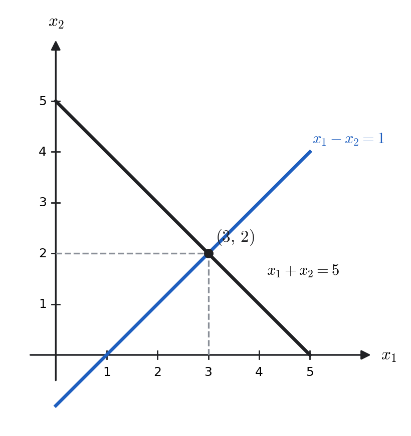
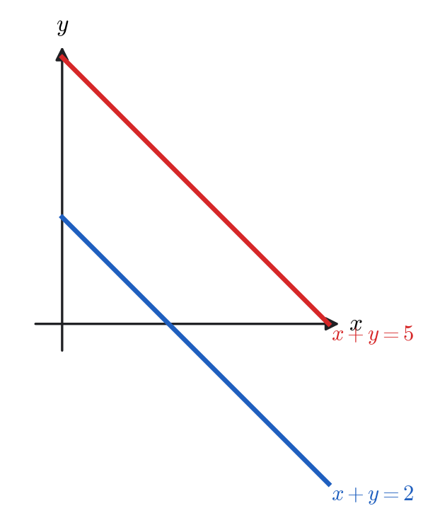
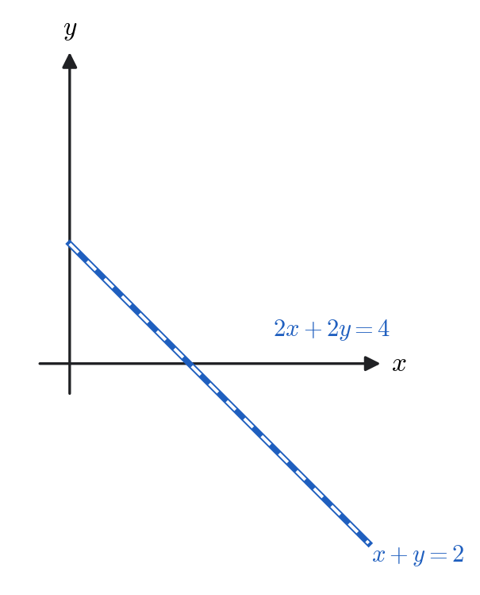
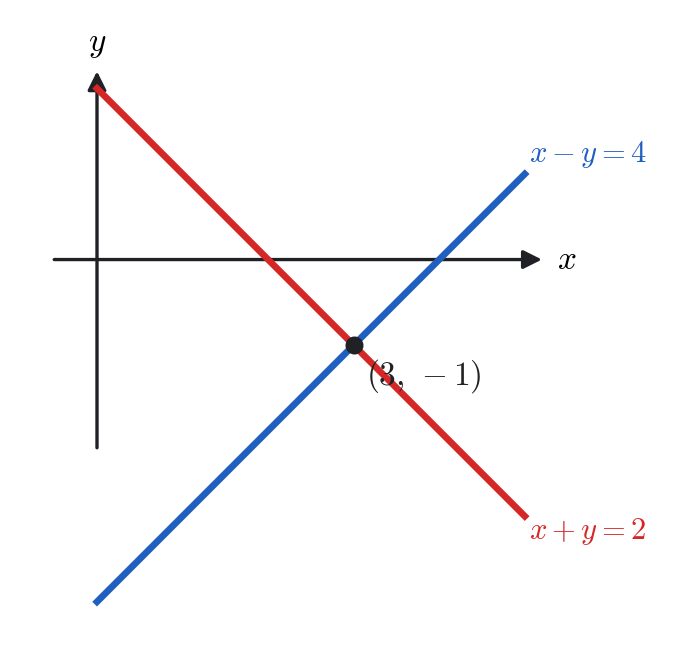
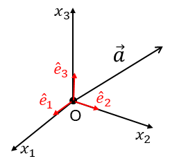
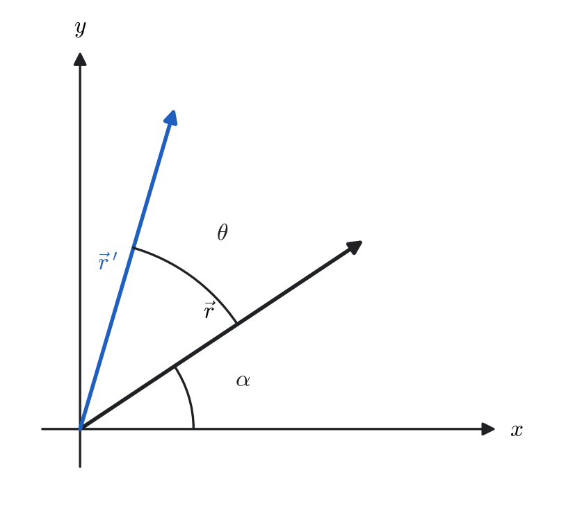
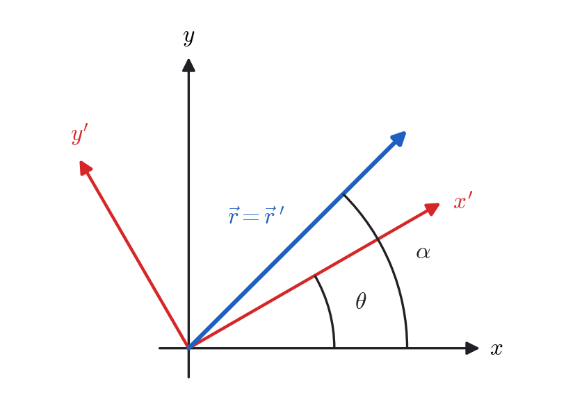
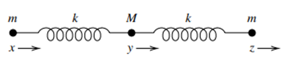

Chapter 3
Linear Algebra
[1] (char) #1;
Linear Equations
Many problems in physics, engineering, and applied mathematics reduce to solving systems of linear equations: examples include Kirchhoff’s circuit laws, equilibrium conditions in mechanics, and eigenvalue problems in quantum mechanics.
A linear equation in the variables \(x_1, x_2, \dots, x_n\) is an equation of the form
Each variable appears only to the first power: no products such as \(x_i x_j\), and no nonlinear operations such as \(x_i^2\), \(\sqrt{x_i}\), \(\sin(x_i)\), etc.
Classify, as in the notes:
System of Linear Equations
For two variables, each linear equation is a line. The solution(s) of a system are the intersection point(s) of those lines.
Sketch: \(\,x_1+x_2=5\) and \(x_1-x_2=1\)

Matrix Form, and Augmented Matrix
A system of linear equations
can be written as \(M\vec x=\vec b\), with coefficient matrix \(M=[M_{ij}]\), unknown vector \(\vec x\), and right-hand side \(\vec b\). The augmented matrix is \(A=[M\,|\,b]\).
Elementary Row Operations
Interchange two rows.
Multiply (or divide) a row by a nonzero constant.
Add a multiple of one row to another.
These do not change the solution set.
Row Echelon Form (REF) and Reduced Row Echelon Form (RREF)
A matrix is in row echelon form if:
all nonzero rows appear above any rows consisting entirely of zeros;
in each nonzero row, the first nonzero entry (called the leading entry or pivot) is to the right of the leading entry in the row above;
all entries below each leading entry are zero.
Important: In REF, pivots do not need to be \(1\).
A matrix is in reduced row echelon form if:
it is already in REF;
each leading entry is \(1\);
each leading \(1\) is the only nonzero entry in its column (including all entries above the pivot must be zero).
Examples of RREF:
Not RREF — Why?
Pivot in column 3 has nonzero entries above it, violating (iii).
of a matrix equals the number of pivots (nonzero rows) in its RREF.
Gauss--Jordan Reduction
System:
This is RREF; \(\mathrm{rank}(M)=\mathrm{rank}(A)=2=n\Rightarrow\) unique solution.
\(\mathrm{rank}(M)=\mathrm{rank}(A)=1<2 \Rightarrow\) infinitely many solutions. Let \(x_2=t\). Then
Last row \(0=10\) is a contradiction. Hence
Let \(n\) be the number of unknowns, \(M\) the coefficient matrix, and \(A\) the augmented matrix of a linear system.
If \(\mathrm{rank}(M) = \mathrm{rank}(A) = n\): Unique solution
If \(\mathrm{rank}(M) = \mathrm{rank}(A) < n\): Infinitely many solutions (\(\Rightarrow\) at least one free variable)
If \(\mathrm{rank}(M) < \mathrm{rank}(A)\): No solution (inconsistent system)
Your three quick cases:
(a) Parallel lines \(\Rightarrow\) No solution
Two distinct lines with the same slope never intersect.

(b) Same line \(\Rightarrow\) Infinitely many solutions
The equations represent the same geometric line.

(c) Intersecting lines \(\Rightarrow\) Unique solution
The lines meet at exactly one point.

Determinants
Determinants provide a compact way of associating a scalar quantity with a square matrix. They are especially useful for testing invertibility and for solving systems of linear equations.
For
General Definition: Cofactor Expansion
Let \(M=[m_{ij}]\) be \(n\times n\). Removing row \(i\) and column \(j\) gives the submatrix \(M^{(ij)}\).
Expanding along row \(1\):
Properties of Determinants
Two identical rows/columns \(\Longrightarrow\) \(\det(M)=0\).
Swap two rows \(\Longrightarrow\) determinant changes sign.
Multiply a row by \(k\) \(\Longrightarrow\) determinant multiplied by \(k\).
Add a multiple of one row to another \(\Longrightarrow\) determinant unchanged.
Triangular matrix \(\Longrightarrow\) determinant \(=\) product of diagonal entries.
\(\boxed{M \text{ is invertible } \iff \det(M)\neq0}\).
Compute the determinant:
Expand along the first row:
Compute each minor:
Cramer's Rule
Let \(M\) be an \(n \times n\) invertible matrix with \(\det(M) \neq 0\). Consider the linear system
Let \(M_i\) be the matrix obtained by replacing the \(i\)-th column of \(M\) with \(\vec{b}\). Then each component of the unique solution is
Cramer's Rule is theoretically important, but computationally expensive for large systems. Practical numerical methods use row reduction instead of determinants.
Solve the system using Cramer’s Rule:
Coefficient matrix:
Replace columns:
Thus:
Vectors
Definition and Notation
A vector is a mathematical object that has both magnitude and direction. In physics, vectors naturally describe quantities that not only have a size but also point in a specific direction. Examples include displacement, velocity, acceleration, force, momentum, and electric or magnetic fields.
Vector in 3D Space
For \(n=3\), the general definition becomes
In standard Cartesian coordinates we identify
so that in three-dimensional space, a vector is written in component form as
where \(\hat{i}, \hat{j}, \hat{k}\) are unit vectors along the \(x,y,z\) axes, and \(a_x,a_y,a_z\) are the components.
Magnitude of a Vector

The magnitude (length) of \(\vec{a}\) is
If \(a=1\), then \(\vec{a}\) is a unit vector. Any nonzero vector can be turned into a unit vector by dividing by its length:
Multiplying a Vector by a Scalar
If \(\alpha\) is a real number (scalar), then
- If \(\alpha>1\), the vector is stretched. - If \(0<\alpha<1\), it is shrunk. - If \(\alpha<0\), the direction is reversed.
Addition and Subtraction
For two vectors
we define
Geometrically, vector addition corresponds to placing the tail of \(\vec{b}\) at the head of \(\vec{a}\) (the parallelogram rule). Subtraction corresponds to adding \(\vec{a}+(-\vec{b})\).
Adding more than two vectors: If we have \(\vec{a}, \vec{b}, \vec{c}, \dots\), then
In words: to add several vectors, add their components along each axis separately.
Geometric picture:
To add multiple vectors, place the tail of each vector at the head of the previous one (``tip-to-tail method''). The final vector goes from the start of the first to the tip of the last.
Subtracting a vector means adding its opposite. For example,
\[ \vec{a} - \vec{b} + \vec{c} = \vec{a} + (-\vec{b}) + \vec{c}. \]
Dot Product (Scalar Product)
The dot product of \(\vec{a}\) and \(\vec{b}\) is defined by
where \(\theta\) is the angle between \(\vec{a}\) and \(\vec{b}\).
Component Formula
Write the vectors in components:
Now compute their dot product using distributivity:
Expanding term by term:
Using the orthonormality relations
all the cross terms vanish, leaving
Conclusion: The component definition
is equivalent to the geometric definition \(\vec{a}\cdot\vec{b}=ab\cos\theta\).
Let \(\vec{a}=(1,2,-1)\) and \(\vec{b}=(2,0,3)\). Then
Since the dot product is negative, the angle between the vectors is obtuse.
Let
Solution.
Step 2. Find the magnitudes.
Step 3. Use the formula.
Step 4. Solve for the angle.
Thus the angle between \(\vec{a}\) and \(\vec{b}\) is
Vectors in \(n\)-Dimensional Space

A vector in an \(n\)-dimensional vector space is written as
where
\(a_i \in \mathbb{R}\) are the components of the vector,
\(\{\hat{e}_i\}_{i=1}^n\) are the basis vectors of the space,
each \(\hat{e}_i\) points along the coordinate axis in the \(i\)-th direction.
This expression is completely general: it defines a vector in any finite-dimensional vector space. In physics, however, we usually work in \(\mathbb{R}^3\), which describes the three spatial directions.
Kronecker Delta and the Dot Product in \(n\) Dimensions
Let \(\{\hat{e}_1,\hat{e}_2,\dots,\hat{e}_n\}\) be the standard orthonormal basis in \(\mathbb{R}^n\). The inner product of two basis vectors is defined as
This property is written compactly using the Kronecker delta:
where
Dot Product in \(n\) Dimensions
Let
The dot product is
Expanding:
Using \(\hat{e}_i \cdot \hat{e}_j = \delta_{ij}\):
Since \(\delta_{ij}\) is zero unless \(i=j\), this reduces to
Cross Product
For two vectors \(\vec{a}\) and \(\vec{b}\) in \(\mathbb{R}^3\), the cross product is a new vector denoted by
Magnitude. The length of the cross product is defined by
where \(a=|\vec{a}|\), \(b=|\vec{b}|\), and \(\theta\) is the angle between \(\vec{a}\) and \(\vec{b}\).
Geometric interpretation.
\(\vec{a}\times\vec{b}\) is perpendicular to both \(\vec{a}\) and \(\vec{b}\).
Its direction is given by the right-hand rule.
Its magnitude equals the area of the parallelogram spanned by \(\vec{a}\) and \(\vec{b}\).
Component Formula for the Cross Product
Write the vectors in component form:
Then
Expanding term by term:
Now use the fundamental relations:
Substituting:
This is the component formula for the cross product. You can seee that the cross product is equal to the determinant
Let \(\vec{a}=(2,1,-1)\) and \(\vec{b}=(3,-2,1)\). Then
Levi-Civita Symbol and the Cross Product
In three dimensions, the cross product of the standard basis vectors is defined by
together with the antisymmetry property
These relations are compactly encoded by the Levi-Civita symbol:
where
Cross Product in 3D
Let
Then
Expanding:
Using the Levi-Civita relation:
Rearranging the sums:
Thus, the \(k\)-th component of \(\vec{a}\times\vec{b}\) is
Matrix Operations
Matrix Equations
Two matrices are said to be equal if and only if they have the same size (same number of rows and columns) and each corresponding element is equal.
Two matrices \(M\) and \(A\) of the same size are equal if and only if all corresponding entries are equal. That is,
Consider the matrix equation
By equating corresponding elements, we find
Multiplication of a Matrix by a Number
A scalar \(\lambda \in \mathbb{R}\) or \(\mathbb{C}\) can multiply a matrix \(M\). This operation means multiplying every entry of the matrix by \(\lambda\).
Let \(M = (m_{ij})\) be a matrix and let \(\lambda \in \mathbb{R}\) (or \(\mathbb{C}\)). The scalar multiple of \(M\) by \(\lambda\) is the matrix obtained by multiplying every entry of \(M\) by \(\lambda\):
Consider the vector
Multiplying by a scalar \(\lambda\) gives
Let
Then
For any matrix \(M = (m_{ij})\) and scalar \(\lambda\),
In other words, scalar multiplication acts on each entry of the matrix.
Let \(A\) be an \(n \times n\) matrix and \(\lambda\) a scalar. Then scaling every row of \(A\) by \(\lambda\) scales the determinant by \(\lambda^n\):
For the same \(A\) as above, let \(\lambda=2\). Then
Indeed,
Matrix Addition
Two matrices of the same size can be added by adding their corresponding elements.
Let \(M = (m_{ij})\) and \(A = (a_{ij})\) be matrices of the *same size. Their sum is defined entry-wise:
For example,
Then
We can only add matrices if they have the same dimensions.
For matrices \(M = (m_{ij})\) and \(A = (a_{ij})\) of the same size,
Let
Then
Repeated addition of the same matrix corresponds to scalar multiplication:
Matrix Multiplication
The product of two matrices \(AB\) is defined if and only if the number of columns of \(A\) equals the number of rows of \(B\).
Let
Then the matrix product \(AB\) is the \(m \times p\) matrix whose entries are given by
Let
Since \(A\) is \(2\times 2\) and \(B\) is \(2\times 3\), the product \(AB\) exists and is \(2\times 3\).
Note: \(BA\) cannot be computed because the dimensions do not match.
Let
Both products \(AB\) and \(BA\) can be computed.
Thus,
Associativity: \(A(BC) = (AB)C\).
Distributivity: \((A+B)C = AC + BC\).
Commutators and Anticommutators
For two square matrices \(A\) and \(B\) of the same size, the commutator is defined by
Consider
Rearranging gives
For two square matrices \(A\) and \(B\) of the same size, the anticommutator is defined by
Expanding
Let \(A\) and \(B\) be square matrices of the same size. Then
More generally, if \(A, B, C, \dots, G\) are all square matrices of the same size, then
Let
First compute
Now compute
so
On the other hand,
Thus,
Zero, Identity, and Transpose of Matrices
Zero Matrix
A zero matrix, denoted \(0\), is a matrix in which every entry is zero. For any matrix \(A\) of the same size,
A \(2 \times 2\) zero matrix:
Identity Matrix
The identity matrix, denoted \(I\), is a square matrix with \(1\)s on the main diagonal and \(0\)s elsewhere. It acts as a multiplicative identity:
The \(3 \times 3\) identity matrix:
For
we have
Transpose of a Matrix
The transpose of a matrix \(A = (a_{ij})\), denoted \(A^T\), is formed by interchanging rows and columns:
For any matrices \(A\) and \(B\) such that the product \(AB\) is defined,
From the definition,
Taking transpose:
On the other hand,
Thus,
Let
Compute
So
Meanwhile,
Hence
This result generalizes to multiple matrices:
Inverse of a Matrix
Recall that the identity matrix \(I\) satisfies
A square matrix \(A\) is invertible (or nonsingular) if there exists a matrix \(A^{-1}\) such that
In this case, \(A^{-1}\) is called the inverse of \(A\).
If \(A\) is an \(n \times n\) matrix with \(\det(A) \neq 0\), then
where the adjugate matrix \(\mathrm{adj}(A)\) is the transpose of the cofactor matrix \(C = (c_{ij})\):
Each cofactor is given by
and \(M^{(ij)}\) is the submatrix formed by removing row \(i\) and column \(j\) of \(A\).
If
then
Let
Compute the cofactors:
- First row:
- Second row:
- Third row:
Thus the cofactor matrix is
Since
the inverse is
We write the system as
Solution.
Step 2. Cofactor matrix.
So
Step 3. Inverse matrix.
Step 4. Multiply by \(\vec{b}\).
Compute components:
Complex Conjugate of a Matrix
Let \(A = (a_{ij})\) be a matrix with complex entries. The complex conjugate of \(A\), denoted \(\bar{A}\) or \(A^*\), is obtained by taking the complex conjugate of each entry:
Hermitian Conjugate (Adjoint)
The Hermitian conjugate of a matrix \(A\), denoted \(A^\dagger\), is defined as the transpose of its complex conjugate:
Equivalently,
If
Special Matrices: Real vs Complex
It is useful to distinguish between real and complex matrices, because many important classes of matrices in the real case (such as symmetric and orthogonal) have natural generalizations in the complex case (Hermitian and unitary). This way, we can see clearly how the theory for real matrices extends to complex matrices.
2gray!10white
| |>blue!10c|c| Real matrices | Complex matrices |
| -- | \(A = \bar{A}\) (all entries real) |
| -- | \(\bar{A} = -A\) (Purely imaginary) |
| \(A = A^T\) (Symmetric) | \(A = A^\dagger\) (Hermitian) |
| \(A = -A^T\) (Anti-symmetric) | \(A = -A^\dagger\) (Anti-Hermitian) |
| \(A^{-1} = A^T\) (Orthogonal) | \(A^{-1} = A^\dagger\) (Unitary) |
| -- | \(AA^\dagger = A^\dagger A\) (Normal) |
The correspondence is clear:
Let \(A\) be a unitary matrix, i.e. \(A^\dagger A = I\).
Then
Thus, every unitary matrix is normal.
Also,
2gray!10white
| |>blue!10c|c|c| Type | Definition | Example (\(2\times 2\)) | |
| Real | \(A = \bar{A}\) | $[arraycc 2 | -1 |
| 0 | 3 array]$ | ||
| Symmetric | \(A = A^T\) | $[arraycc 2 | 5 |
| 5 | -1 array]$ | ||
| Anti-symmetric | \(A = -A^T\) | $[arraycc 0 | -3 |
| 3 | 0 array]$ | ||
| Orthogonal | \(A^{-1} = A^T\) | $[arraycc 0 | -1 |
| 1 | 0 array]$ | ||
| Purely imaginary | \(\bar{A} = -A\) | $[arraycc i | 0 |
| 0 | -i array]$ | ||
| Hermitian | \(A^\dagger = A\) | $[arraycc 2 | 1+i |
| 1-i | 3 array]$ | ||
| Anti-Hermitian | \(A^\dagger = -A\) | $[arraycc i | 2 |
| -2 | -i array]$ | ||
| Unitary | \(A^{-1} = A^\dagger\) | $12[arraycc 1 | i |
| i | 1 array]$ | ||
| Normal | \(AA^\dagger = A^\dagger A\) | $[arraycc 1 | 1 |
| 0 | 1 array]$ |
Functions of Matrices
We can extend the notion of a function of a number to a function of a matrix. In general, a function \(f(A)\) of a matrix is defined by the Taylor (Maclaurin) series expansion of \(f(x)\), with the variable \(x\) replaced by the matrix \(A\).
The Maclaurin series of a function \(f(x)\) is
Accordingly, we define
where \(I\) is the identity matrix.
Let
a) Polynomial function of \(A\). First compute
Now consider
Using \(A^2 = -I\), higher powers reduce:
Thus
Therefore,
b) Exponential of \(A\) using Maclaurin series. The exponential of a matrix is defined by
Using \(A^2 = -I\), higher powers alternate:
Thus
Recognizing the series expansions,
In general,
However, if \([A,B]=0\) (i.e., \(AB=BA\)), then
Linear Combinations and Linear Functions
Let \(\vec{r}_1, \vec{r}_2 \in \mathbb{R}^n\) (or \(\mathbb{C}^n\)) and let \(a,b\) be scalars. Any vector of the form
is called a linear combination of \(\vec{r}_1\) and \(\vec{r}_2\).
A function \(f: \mathbb{R}^n \to \mathbb{R}\) (or \(\mathbb{C}\)) is linear if, for all scalars \(a,b\) and vectors \(\vec{r}_1, \vec{r}_2\),
Such functions are also called linear functionals.
A vector-valued function \(\vec{F} : \mathbb{R}^n \to \mathbb{R}^m\) is linear if, for all scalars \(a,b\) and vectors \(\vec{r}_1, \vec{r}_2\),
Such functions are also called linear transformations or linear maps.
Is the exponential operator linear? Check:
Therefore, the exponential function is not linear.
Let \(\mathcal{O}\) be a function (operator) defined on a vector space \(V\). We say \(\mathcal{O}\) is a linear operator if, for all scalars \(a,b\) and vectors \(A,B \in V\),
The derivative operator \(\dfrac{d}{dx}\) is linear because
Similarly, the integral operator
is linear since
Matrix Operators and Linear Transformations
A linear transformation (or linear mapping) is a function
that maps vectors to vectors and satisfies, for all vectors \(\vec{r}_1, \vec{r}_2\) and scalars \(a,b\),
Equivalently, linear transformations preserve vector addition and scalar multiplication.
Linear Transformations in 2D
Consider the set of equations
where \(a,b,c,d\) are constants.
For every point \((x,y)\), these equations map it to a new point \((X,Y)\). This process is called a mapping or transformation of the plane. The matrix \(M\) contains all the information about this transformation, and acts as a linear operator.
Since
the matrix \(M\) is a linear operator.
Geometric Interpretation
Equations \(\eqref{eq:lintrans}\) can be interpreted in two ways:
The vector \(\vec{r}\) is mapped to a new vector \(\vec{R}\) in the same coordinate system.
Or, the coordinates of the same vector are expressed in a new coordinate system \((x',y')\).
Orthogonal Transformations
A real square matrix \(M\) is called orthogonal if
Equivalently,
Thus, the columns (and rows) of an orthogonal matrix form an orthonormal set of vectors.
Conditions for a \(2\times 2\) Orthogonal Matrix
Let
Then
For orthogonality, we require
Thus, the conditions are
Determinant Property
If \(M\) is an orthogonal matrix, then
Since \(M^TM = I\),
But
so
Rotation in 2D
Active Rotation
Consider a vector
In polar form,
where \(r = \sqrt{x^2+y^2}\) and \(\alpha\) is the angle of the vector with the \(x\)-axis.
Rotation of Coordinates
Suppose a vector in the plane is written in polar form as
where \(r\) is the magnitude and \(\alpha\) is the angle with respect to the \(x\)-axis.
After a counterclockwise rotation by an angle \(\theta\), the new vector becomes
Using the addition identities,
we substitute to obtain
Since \(x = r\cos\alpha\) and \(y = r\sin\alpha\), this simplifies to
Resulting Coordinate Transformation
Thus, the rotated coordinates are
Matrix Form
This can be written in matrix form as
The matrix
is called the rotation matrix in 2D.

Passive Rotation
In a passive rotation, instead of rotating the vector, we rotate the coordinate system by \(\theta\), while keeping the vector fixed.
Equivalently, the components of the vector are expressed relative to the rotated axes \((x',y')\). In this case, the relation between old and new coordinates is

Rotations and Reflections in 3D
Rotations in three dimensions can be represented by special orthogonal matrices (\(\det M = +1\)). Reflections are also represented by orthogonal matrices, but with determinant \(-1\).
Rotation about the \(z\)-axis
A rotation by angle \(\theta\) about the \(z\)-axis is given by
Rotation about the \(z\)-axis with reflection in the \(xy\)-plane
If we combine a rotation about \(z\) with a reflection through the \(xy\)-plane, the matrix becomes
This is an orthogonal matrix with determinant \(-1\).
Rotation about the \(y\)-axis
A rotation by angle \(\beta\) about the \(y\)-axis is
Rotation about the \(x\)-axis
A rotation by angle \(\alpha\) about the \(x\)-axis is
General 3D Rotation
A general rotation in 3D can be expressed as a product of basic rotations:
Each rotation preserves vector length: \(\left\|\vec{r}\right\| = \left\|R\vec{r}\right\|\).
The determinant distinguishes between a pure rotation (\(\det = +1\)) and a rotation combined with reflection (\(\det = -1\)).
The product of orthogonal matrices is also orthogonal.
Linear Independence
Vectors
A set of vectors \(\{\vec{a}, \vec{b}, \vec{c}, \dots\}\) is called linearly dependent if there exist scalars \(k_1, k_2, k_3, \dots\), not all zero, such that
A set of vectors is linearly independent if the only solution to
is the trivial solution:
Let
Then
so \(\vec{a}, \vec{b}, \vec{c}\) are linearly dependent.
However, the standard basis vectors \(\hat{i}, \hat{j}, \hat{k}\) are linearly independent since
Functions and Linear Dependence
Functions \(f_1(x), f_2(x), \dots, f_n(x)\) are called linearly dependent on an interval \(I\) if there exist constants \(k_1, k_2, \dots, k_n\), not all zero, such that
If the only solution is \(k_1 = k_2 = \cdots = k_n = 0\), then the functions are linearly independent on \(I\).
Wronskian Test for Independence
Given functions \(f_1, f_2, \dots, f_n\) that are \((n-1)\)-times differentiable, their Wronskian is defined as the determinant
If \(W(x) \neq 0\) for at least one point (or on some subinterval) of the interval \(I\), then the functions \(f_1, f_2, \dots, f_n\) are linearly independent on \(I\).
Consider the functions
The Wronskian is
Expanding the determinant:
Since \(W(x) \neq 0\) (for \(x \neq n\pi\)), the functions are linearly independent.
Linear independence is important because it tells us whether a set of functions (or vectors) provides genuinely new information. If functions are linearly dependent, then at least one of them can be expressed as a combination of the others, meaning it does not add anything new.
In differential equations, solutions are only useful if they are linearly independent. For example, the general solution of a second-order linear ODE requires two linearly independent solutions.
In Fourier series or orthogonal expansions, independence ensures that different basis functions represent different "directions" in function space.
In linear algebra, linear independence guarantees that a basis spans the space without redundancy, so every vector (or function) can be uniquely expressed as a combination of basis elements.
In short, linear independence is what allows us to build efficient and non-redundant representations of mathematical objects.
Homogeneous Equations
General Form
A system of linear equations can be written as
If \(\vec{b} = \vec{0}\), the system is called a homogeneous system:
Basic Properties
Homogeneous equations are never inconsistent: the trivial solution \(\vec{x} = \vec{0}\) always exists.
If \(\operatorname{rank}(M) = \text{Number of unknowns}\), the system has only the trivial solution.
If \(\operatorname{rank}(M) < \text{Number of unknowns}\), then there are infinitely many solutions.
Consider the system
In matrix form:
Here \(\operatorname{rank}(M)=2=\text{Number unknowns}\). Thus, the only solution is the trivial one: \(\vec{x} = \vec{0}\).
Consider the system
In matrix form:
Here \(\operatorname{rank}(M)=1 < \text{Number unknowns}=2\). Thus, the system has infinitely many non-trivial solutions, e.g.
A homogeneous system of linear equations
where \(M\) is an \(n \times n\) matrix, has non-trivial solutions (\(\vec{x} \neq \vec{0}\)) if and only if
Equivalently, the system has only the trivial solution \(\vec{x} = \vec{0}\) when \(\det(M) \neq 0\).
Eigenvalues, Eigenvectors, and Matrix Diagonalization
From Linear Systems to Eigenvalue Problem
A general system of linear equations can be written as
A special case occurs when the vector on the right-hand side is proportional to \(\vec{x}\), i.e.
Then
This is called the eigenvalue problem, where
\(\lambda\) is an eigenvalue,
\(\vec{x}\) is the corresponding eigenvector.
Rearranging,
This is a homogeneous system. For non-trivial solutions to exist, we require
which is called the characteristic equation.
The roots of this equation give the eigenvalues of \(M\). The corresponding eigenvectors are obtained by solving \((M-\lambda I)\vec{x}=0\).
Let
Solution.
Expanding,
Thus, the eigenvalues are
Step 2. Eigenvector for \(\lambda_1=1\).
Solve
This gives \(y=2x\). Take \(x=1\), then
Normalize:
Step 3. Eigenvector for \(\lambda_2=6\).
Solve
This gives \(x=-2y\). Take \(y=1\), then
Normalize:
Orthogonality
Notice
Thus, \(\hat{v}_1\) and \(\hat{v}_2\) are orthogonal and normalized.
Matrix Diagonalization
If a matrix \(M\) has \(n\) linearly independent eigenvectors, then it can be diagonalized. That is, there exists a matrix \(C\) such that
where \(D\) is a diagonal matrix.
\(D\) contains the eigenvalues of \(M\) along its diagonal.
\(C\) is the matrix whose columns are the eigenvectors of \(M\).
Explicitly,
From the previous example with
we found eigenvalues \(\lambda_1=1\), \(\lambda_2=6\), and normalized eigenvectors
Then
Initially, in the standard \(x,y\)-coordinate system, the matrix \(M\) is not diagonal, so the action of \(M\) mixes the two coordinates.
By finding eigenvectors, we identify new directions (the eigenvector directions) along which \(M\) acts by simple stretching (scaling) without mixing.
Placing the eigenvectors as columns of \(C\) gives a new coordinate system aligned with these eigenvector directions. In this new system:
and the matrix becomes diagonal.
Geometrically: \(C\) is an orthogonal matrix (\(C^T C = I\)), so it represents a rotation of axes. This rotation “re-orients” the coordinate system so that the complicated mixing of \(M\) in the \(x,y\) basis becomes pure stretching along the new axes.
Degeneracy
If two or more eigenvalues of a matrix are equal, the eigenvalue is said to be degenerate. In this case, there may be more than one linearly independent eigenvector associated with the same eigenvalue.
Consider
The eigenvalues are
For \(\lambda=6\): an eigenvector is
\[ \vec{v}_1 = \begin{pmatrix} 2 \\ -2 \\ 1 \end{pmatrix}. \]For the degenerate eigenvalue \(\lambda=-3\): two linearly independent eigenvectors are
\[ \vec{v}_2 = \begin{pmatrix} 1 \\ 1 \\ 0 \end{pmatrix}, \qquad \vec{v}_3 = \begin{pmatrix} -1 \\ 0 \\ 2 \end{pmatrix}. \]
Thus, the eigenspace corresponding to \(\lambda=-3\) is two-dimensional.
Degeneracy often arises in physics due to symmetries (e.g., rotational invariance). In such cases, the set of eigenvectors corresponding to a degenerate eigenvalue spans a subspace, and any linear combination of them is also an eigenvector.
Application Diagonalization: Vibrations of a Linear Triatomic Molecule
Consider a linear triatomic molecule with three atoms connected by springs (see Figure reference). The outer atoms each have mass \(m\), and the central atom has mass \(M\). The spring constant is \(k\).

Let the displacements from equilibrium be denoted by \(x, y, z\) for the left, middle, and right masses respectively. We are interested in finding the normal modes of vibration and the corresponding frequencies.
Potential Energy and Equations of Motion
The potential energy stored in the springs is
The equations of motion follow from Newton’s second law:
Normal Mode Ansatz
We seek normal mode solutions of the form
This leads to the eigenvalue problem
Let
The eigenvalues of this matrix are
Modes by Symmetry
Translation (zero mode):
\[ \omega_0 = 0, \qquad (X:Y:Z) = (1:1:1), \qquad \hat{\mathbf v}_0=\frac{1}{\sqrt{3}} \begin{pmatrix}1\\[2pt]1\\[2pt]1\end{pmatrix}. \]Antisymmetric stretch:
\[ \omega_- = \sqrt{\tfrac{k}{m}}, \qquad (X:Y:Z) = (1:0:-1), \qquad \hat{\mathbf v}_-=\frac{1}{\sqrt{2}} \begin{pmatrix}1\\[2pt]0\\[2pt]-1\end{pmatrix}. \]Symmetric stretch:
\[ \omega_+ = \sqrt{\tfrac{k}{m}\left(1 + \tfrac{2m}{M}\right)}, \qquad (X:Y:Z) = \Big(1:-\tfrac{2m}{M}:1\Big), \]\[ \hat{\mathbf v}_+=\frac{1}{\sqrt{\,2+4\left(\tfrac{m}{M}\right)^2\,}} \begin{pmatrix}1\\[2pt]-\tfrac{2m}{M}\\[2pt]1\end{pmatrix}. \]
General Vector Spaces
Up to now, we have mostly thought of vectors as arrows in 2D or 3D space. However, the concept of a vector is much broader. Many mathematical objects (functions, polynomials, matrices, sequences) behave like vectors as long as they satisfy the same algebraic rules of addition and scalar multiplication. Such collections of objects are called vector spaces.
Definition of a Vector Space
A vector space over the real (or complex) numbers is a set of objects \( \mathcal{V} = \{ U,V,W,\dots \} \), called vectors, together with two operations:
Vector addition: \( U+V \in \mathcal{V} \) for all \(U,V \in \mathcal{V}\),
Scalar multiplication: \( kV \in \mathcal{V} \) for any scalar \(k\).
These operations must satisfy the following axioms:
Closure: \(U+V \in \mathcal{V}\).
Commutativity: \(U+V = V+U\).
Associativity: \(U+(V+W) = (U+V)+W\).
Zero vector: \(\exists \, \vec{0} \in \mathcal{V}\) such that \(V+\vec{0}=V\).
Additive inverse: For every \(V\in \mathcal{V}\), there exists \(-V\) such that \(V+(-V)=0\).
Distributive properties:
\[ k(U+V) = kU+kV, \quad (k_1+k_2)V = k_1V+k_2V. \]Associativity of scalar multiplication:
\[ (k_1 k_2)V = k_1(k_2 V). \]Identity for scalar multiplication:
\[ 1 \cdot V = V, \qquad 0 \cdot V = \vec{0}. \]
Examples of Vector Spaces
The set of all polynomials of degree \(\leq 3\),
forms a vector space. The basis is
Any polynomial of degree \(\leq 3\) can be written as a linear combination of these basis elements.
The set \(\{ e^{ix}, e^{-ix}, \sin(x), \cos(x) \}\) spans a vector space of functions. A basis is \(\{\sin(x), \cos(x)\}\), or equivalently, \(\{e^{ix}, e^{-ix}\}\).
The set of all \(2\times 2\) matrices with real entries is a vector space. For example, the basis can be chosen as
Bra--Ket Notation and Inner/Outer Products
Motivation
So far, we have written the dot product of two vectors \(\vec{a}, \vec{b}\) as
In quantum mechanics and linear algebra, it is often convenient to use the Dirac notation, also called bra--ket notation, which provides a compact and powerful way to express inner and outer products.
Kets and Bras
A vector is written as a ket:
Its conjugate transpose is called a bra:
Inner Product (Dot Product)
The dot product (inner product) of two vectors \(|a\rangle, |b\rangle\) is written as
Thus, the ordinary dot product
Outer Product
The outer product of two vectors is written as
This gives an \(n\times n\) matrix whose \(ij\)-th entry is \(a_i b_j^*\).
Completeness Relation
For a complete set of orthonormal basis vectors \(\{ |e_i\rangle \}\),
This is called the completeness relation.
In 3D space, the standard basis is
Then
Summary
\(|a\rangle\) = ket = column vector.
\(\langle a|\) = bra = conjugate transpose (row vector).
\(\langle a|b \rangle\) = inner product (scalar).
\(|a\rangle \langle b|\) = outer product (matrix).
Completeness: \(\sum_i |e_i\rangle \langle e_i| = I\).
Hilbert Spaces: Inner Product, Norm, and Orthogonality
Inner Product
For functions \(A(x), B(x)\) defined on an interval \([a,b]\), the inner product is defined as
where \(A^*(x)\) is the complex conjugate of \(A(x)\).
Norm
The norm (or length) of a function is
Orthogonality
Two functions are orthogonal if
Properties of Inner Product Spaces
An inner product space is a vector space with an additional inner product that satisfies:
Conjugate symmetry: \(\langle A, B \rangle^* = \langle B, A \rangle\).
Linearity in the second argument:
\[ \langle A, \alpha B + \beta C \rangle = \alpha \langle A,B \rangle + \beta \langle A,C \rangle. \]Antilinearity in the first argument:
\[ \langle \alpha A + \beta B, C \rangle = \alpha^* \langle A,C \rangle + \beta^* \langle B,C \rangle. \]Positive definiteness:
\[ \langle A,A \rangle \geq 0, \qquad \langle A,A \rangle = 0 \iff A=0. \]
Hilbert Space
A Hilbert space is an inner product space that is also complete, meaning that all Cauchy sequences converge within the space. An important example is the space of square-integrable functions:
Functions in \(L^2\) can be normalized so that
Orthonormal Bases
A set of functions \(\{ f_n(x) \}\) is orthonormal if
Any function \(g(x)\) in the Hilbert space can be expanded as a linear combination:
For example, on the interval \([-\pi,\pi]\), the set
forms an orthogonal basis under the inner product
If the set \(\{f_n\}\) is complete, then
Schwarz’s Inequality
For any two vectors (functions) \(A, B\) in an inner product space,
This is a fundamental inequality that ensures consistency of the inner product structure.
Gram--Schmidt Method of Orthonormalization
Motivation
Given a set of linearly independent vectors
we want to construct an orthonormal basis
The Gram--Schmidt procedure provides a systematic way to do this.
Procedure
Start with
\[ |e_1\rangle = \frac{|A\rangle}{\sqrt{\langle A|A\rangle}}. \]Subtract from \(|B\rangle\) its projection onto \(|e_1\rangle\):
\[ |e_2'\rangle = |B\rangle - \langle e_1|B\rangle |e_1\rangle, \qquad |e_2\rangle = \frac{|e_2'\rangle}{\sqrt{\langle e_2'|e_2'\rangle}}. \]Subtract from \(|C\rangle\) its projections onto both \(|e_1\rangle\) and \(|e_2\rangle\):
\[ |e_3'\rangle = |C\rangle - \langle e_1|C\rangle |e_1\rangle - \langle e_2|C\rangle |e_2\rangle, \qquad |e_3\rangle = \frac{|e_3'\rangle}{\sqrt{\langle e_3'|e_3'\rangle}}. \]
At each step, we subtract projections to guarantee orthogonality, and then normalize to guarantee unit length.
Suppose we start with
Solution.
Step 2: Construct \(|e_2\rangle\).
Compute
So
Normalize:
Step 3: Construct \(|e_3\rangle\).
Gram--Schmidt converts a linearly independent set of vectors into an orthonormal set.
In bra--ket notation: projections are written as \(\langle e_i|v\rangle |e_i\rangle\).
Resulting vectors \(\{|e_i\rangle\}\) form an orthonormal basis: \(\langle e_i|e_j\rangle = \delta_{ij}\).